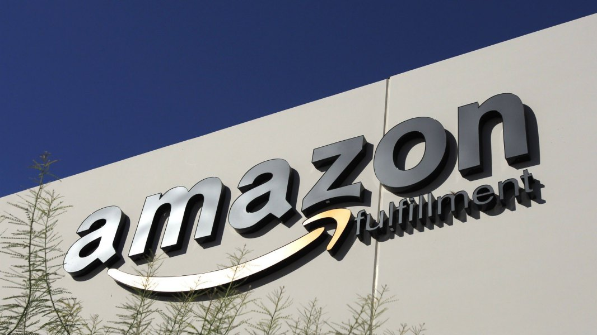
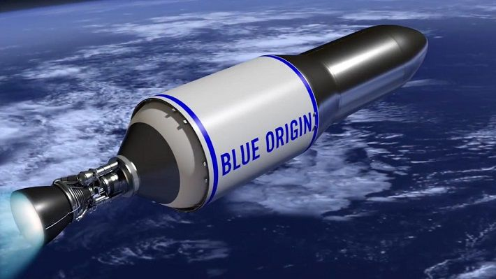
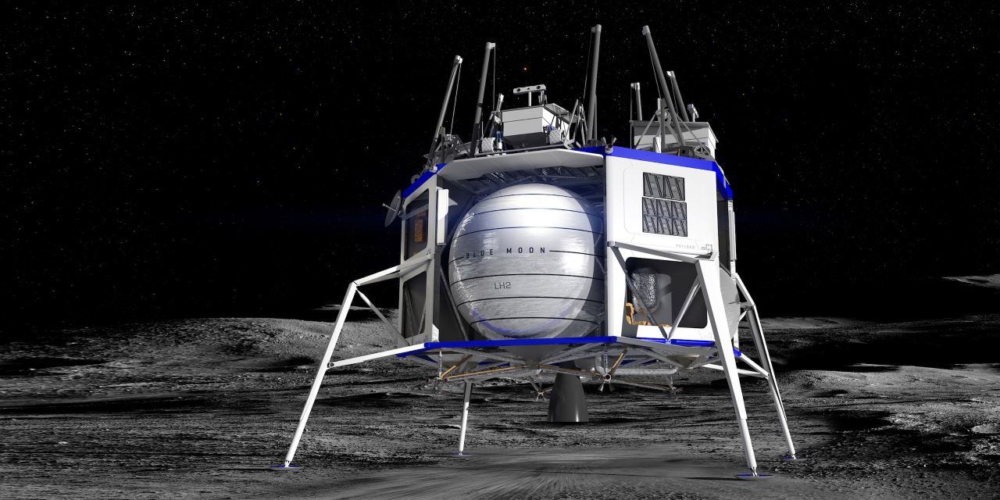
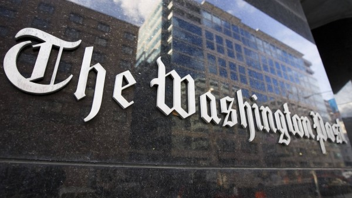

Amazon
Amazon— американская компания, крупнейшая в мире на рынках платформ электронной коммерции и публично-облачных вычислений по выручке и рыночной капитализации. Штаб-квартира — в Сиэтле. ОснованаДжеффомБезосом 5 июля 1994 года как интернет-магазин по продаже книг, но позже диверсифицировался, начав продавать видео, MP3, аудиокниги (как потоковым способом, так и через возможность загрузки), программное обеспечение, видеоигры, электронику, одежду, мебель, еду, игрушки и ювелирные изделия. Компания также владеет издательским подразделением AmazonPublishing, киностудией AmazonStudios, производит линии бытовой электроники, включая электронныеридеры Kindle, планшеты AmazonFire, Fire TV и смарт-динамик Echo, и является крупнейшим в мире поставщиком услуг в моделях. Поддерживает отдельные розничные сайты для некоторых стран, а также предлагает международную доставку некоторых своих продуктов в некоторые другие страны.
Поддерживает отдельные розничные сайты для некоторых стран, а также предлагает международную доставку некоторых своих продуктов в некоторые другие страны. В настоящее время сервис Amazon.com охватывает 34 категории товаров, в том числе электронные книги, бытовую электронику, детские игрушки, пищевые продукты, хозяйственные товары, спортивные товары и многое другое. В данный момент на Amazon присутствует около трех миллионов активных продавцов во всем мире, которые делают до 60% всех продаж на платформе. Соответственно, доля самого Amazon составляет приблизительно 40% от общих продаж. Представив масштабы конкуренции, трудно понять, зачем вообще туда заходят новые продавцы. Тем не менее, в этом действительно есть смысл, и именно благодаря особенностям работы алгоритмов на Amazon.
Blue Origin
BlueOrigin — американская частная аэрокосмическая компания. Создана в 2000 году основателем AmazonДжеффомБезосом и находится на территории его ранчо, расположенном в 40 км к северу от города Ван-Хорн, округ Калберсон, штат Техас, США. Компания была создана в 2000 году для космического туризма. В марте 2017 BlueOrigin получила первого платного клиента, им стал спутниковый телевизионный провайдер Eutelsat — 7 марта был подписан контракт, по которому в течение пяти лет один из спутников этой компании будет выведен на орбиту при помощи ракеты-носителя NewGlenn.(проектируемая двух- или трёхступенчатая тяжёлаяорбитальная ракета-носитель, разрабатываемая американской компанией BlueOriginс 2012 года. Первый запуск этой ракеты планируется произвести в 2021 году. ) Днём позже был подписан второй контракт, на пять пусков ракеты NewGlenn со спутниками компании OneWeb.
Опытные образцы и прототипы
New Shepard
Безос работал на Уолл-стрит на должности вице-президента в компании D. E. Shaw & Co, но в 1994 году задумался о запуске книжного интернет-магазина. Когда Джефф поделился своими мыслями с непосредственным начальником, тот заявил, что идея сама по себе неплоха, но больше подойдет для человека, не имеющего хорошей работы. В итоге Безос пришел к выводу, что «лучшим способом подумать об этом станет представить свою жизнь в возрасте 80 лет» и принять решение, которое «минимизирует сожаление». По словам Безоса, человек может сожалеть о своих ошибках, однако чаще всего горечь возникает из-за бездействия, например, из-за так и не сделанного признания в любви. Тогда Безос принял решение уйти с должности и основать Amazon. «Если бы из моей задумки ничего не получилось, в 80 лет я был бы очень горд тем, что попытался», – отметил Джефф.
.jpg)
New Glenn
В сентябре 2015 года компания BlueOrigin объявила о планах начала создания новой, более мощной многоразовой ракеты-носителя в котором будет установлен новый двигатель BE-4 совместно разрабатываемый компаниями BlueOrigin и UnitedLaunchAlliance. Планируется, что сначала ракета будет доставлять на орбиту спутники, а затем и людей. В сентябре 2016 года было объявлено официально название новой ракеты: NewGlenn и опубликованы её характеристики. Первый запуск, с мыса Канаверал, был назначен на 2020 год, но сейчас ожидается не ранее 2021 года.
Blue Moon
В мае 2019 года в Вашингтоне презентован прототип посадочного модуля для высадки на Луну BlueMoon. Аппарат может совершать мягкую посадку на поверхность Луны, имея полезную нагрузку от 3,6 до 6,5 тонн, при этом на его крыше можно будет разместить луноход.
The Washington Post
The Washington Post- американская ежедневная газета. Издаётся в городе Вашингтоне. Крупнейшая газета столицы Соединённых Штатов Америки, также входит в число старейших и влиятельных. Содержит срочные новости, репортажи на национальные и международные темы, очерки и комментарии. Лозунг газеты «Демократия умирает во тьме» начал появляться на его главном заголовке в 2017 году. Газета получила 47 Пулитцеровских премий, в том числе шесть отдельных премий в 2008 году. Одна из крупнейших медиакомпаний мира — The Washington Post — существует уже с 1877 года. Принято считать, что это в первую очередь ежедневная газета. На самом деле, Washington Post — это еще и онлайн-издание с многомиллионной аудиторией.
